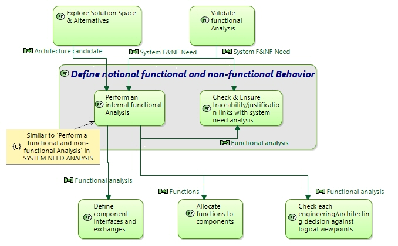

Define notional functional and non-functional Behavior
Engineering activity
Engineering activities > Engineering Activities & Perspectives > DESIGN THE SOLUTION ARCHITECTURE > Design LOGICAL ARCHITECTURE > Define notional functional and non-functional Behavior
This task is similar to System Need Analysis 'Define notional functional and non-functional Behavior'.
Define a functional behaviour that should fulfil former functional analysis, addressing:
- design & description of solution behaviour instead of need expression
- first design decisions reagrding behaviour
Build and maintain justification and traceability links with System Need Analysis functions, functional chains, scenarios, modes &states, data etc.
More precisely,
- Identify functions required to satisfy and implement all system need analysis functions
- Complement them with necessary functions that were not identified in need analysis
- List and detail information, data flows, managed, exchanged and required by all these functions (internal or external to system); including required standards & interfaces
-
Identify functional chains traversing the system/SW in order to implement need defined functional chains (traversing functions & data flows); similarly define functional scenarios implementing those defined at need level;
enrich them if needed in order to appropriately define and check solution behaviour - Identify system/SW modes & states, relate them to functions; enrich them if needed
- Create and maintain traceability links with system need analysis (e.g. between functions, between functional chains, between scenarios).
Identify all major dimensioning needs, and [non-functional] constraints, relating them to the appropriate fonctions, functional chains, actors… and associated scenarios, and relate them to system scenarios: e.g.
- Identify non-functional constraints (performance, safety…) and relate them to concerned functions, functional chains…
- Identify industrial constraints not coming from customer/user: ability to produce, to test, to maintain, to sub-contract…
- When intending to reuse existing assets, check this functional/non-functional analysis against these assets for compatibility.
- Enrich system scenarios with non-functional & industrial constraints
-
Identify and select main (non functional) viewpoints (concerns) (*) susceptible to impact the functional analysis.
Each viewpoint should emphasise a specific set of constraints or expected behaviour, quality, respect of non-functional properties… At least one viewpoint should be dedicated to Reuse and Product Policy. - Try to order them in terms of importance, relative priority.
Ensure traceability/justification links between system need and notional and functional/non-functional analyses, and check consistency/coherency between them.
Input:
- System Need Analysis outputs
- Customer Requirements
Output:
- Functional & non-functional analysis result (System functional breakdown + dataflow, functional chains, non functional constraints, scenarios…)
- Traceability between notional & System Need analyses
- List of relevant /critical viewpoints for the target system architecture
Target documents:
- System/Segment Design Document (SSDD) (preliminay)
Verification and Consistency checks:
External consistency:
- Between System Need and notional functional Analysis functions/data…
Internal consistency:
- Between all functional & non-functional elements
- Verify the functional/non-functional Behaviour Description: coherent, complete, relevant: no contradiction, no gap, no inaccuracy.
Details of Outputs Contents
-
 Functional chains in LA
Functional chains in LA
-
Modes & states in LA
-
Constraints
-
Allocated Data in LA
-
Functional Breakdown in LA
-
Allocated functions in LA
-
Allocated Exchange Items in LA
-
Scenarios in LA
-
Users/Actors in LA
-
Functional dataflow in LA
-
System Capabilities in LA
Details of Inputs Contents
Related Diagrams
3Define notional functional and nonfunctional Behavior Context

This figure describes the interactions of the considered task with other engineering activities.
Diagrams displaying "Define notional functional and non-functional Behavior"
- 4 - Customer Work
- 5 - Models Management
- 4 - IVVQ Manager Work
- 4 - Sub-contractor Work
- 3-Define notional functional and non-functional Behavior - Context
- 4 - Non functional Specialty Engineering Work
- 4 - Data & Interface Manager Work
- 2-Design LOGICAL ARCHITECTURE - Contents
- 4 - Product Line & Configuration Managers Work
- 4 - Chief Architect Work
- 1 - First Level Tasks of Architecture Definition Perspectives